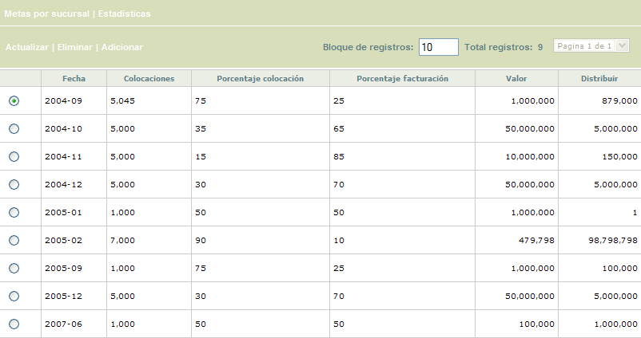
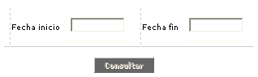
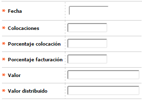
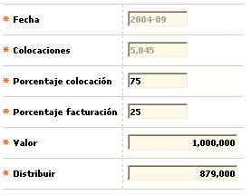

|
Estadísticas colocaciones |
Mediante esta función se evalúa la gestión de las oficinas respecto a los productos colocados activos y el nivel de facturación que se desprende como resultado de dicha colocación.
El formulario contiene las opciones Actualizar, Eliminar, y Adicionar. Adicionalmente, cuenta con un filtro de búsqueda, la opción Metas por sucursal, y dos botones de opciones especiales.

Filtro: Se pueden realizar consultas a través de las siguientes opciones:

|
Fecha inicio |
Campo con formato YYYY-MM , que define la fecha inicio del rango que se desea filtrar. |
|
Fecha fin |
Campo con formato YYYY-MM , que define la fecha fin del rango que se desea filtrar. |
Adicionar: Si el usuario invoca la opción Adicionar se despliega un formulario con los siguientes campos:

|
Fecha |
Campo obligatorio, en formato YYYY-MM, que define el período de tiempo sobre el cual se fija metas la entidad respecto a la colocación de nuevos productos y niveles de facturación de los productos nuevos más los activos. |
|
Colocaciones |
Campo numérico de 7 posiciones, obligatorio, en el cual se define la cantidad de productos nuevos que la entidad se fija como meta a determinado tiempo. |
|
Porcentaje colocación |
En este campo numérico de 3 enteros y 2 decimales,obligatorio, se define la proporción que se asignará a las oficinas por colocación de productos con base en el valor a distribuir a las mismas. Su diligenciamiento es obligatorio y sumados con el campo Porcentaje facturación no deben exceder el cien por ciento. |
|
Porcentaje facturación |
En este campo numérico de 3 enteros y 2 decimales, obligatorio,se define la proporción que se asignará a las oficinas por montos de facturación con base en el valor a distribuir a las mismas. Su diligenciamiento es obligatorio y sumados con el campo Porcentaje colocación no deben exceder el cien por ciento. |
|
Valor |
Campo numérico de 14 enteros y dos decimales, obligatorio, en el cual se define el valor de facturación de productos nuevos y existentes que la entidad se fija como meta a un determinado tiempo. |
|
Valor distribuido |
Campo numérico de 14 enteros y dos decimales, obligatorio,que permite definir el valor distribuido a las sucursales por cumplimiento de las metas fijadas por la entidad. |
Actualizar: Si el usuario invoca la opción Actualizar se despliega un nuevo formulario en el cual los únicos campos modificables son: Porcentaje colocación, Porcentaje facturación, Valor y Distribuir.

Botones: